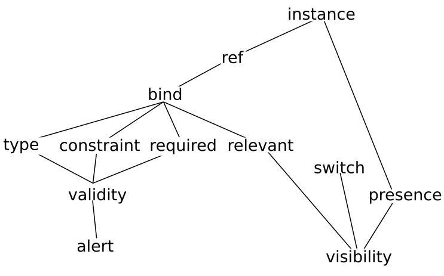

Content
The first task in designing a tutorial is to identify the topics to be taught. This was a fairly easy job in this case, since it only involved running through the headings of the XForms specification, and selecting topics. Naturally enough, a structured XML document listing those topics, and their relative structure was created as part of this process:
<learn title="What you will learn"> <topic name="Structure of an XForm"> <topic done="" name="<model>"/> <topic done="" name="content"/> </topic> <topic name="Instance data"> <topic done="" name="internal <instance>"/> <topic done="" name="external <instance @resource>"/> <topic done="" name="<bind>"> <topic done="" name="@ref"/> <topic done="" name="@type"/> <topic done="" name="@calculate"/> <topic done="" name="@relevant"/> <topic done="" name="@required"/> <topic done="" name="@readonly"/> <topic done="" name="@constraint"/> </topic> </topic> ...
In fact this one document ended up being used in three ways: firstly and primarily as the list of topics that needed to be covered, that could then be checked off one by one as the tutorial was written, as a check for completeness. But additionally it ended up displayed in two different ways in the tutorial itself: once at the beginning as an overview of what would be taught in the course, and again at the end of the course, though displayed in a different way, as a summary of what had been taught, allowing the reader to check each topic off as a reminder of what had been learned (a correspondent had indicated that tutorials that included such a check-list on average were evaluated by attendees 10% higher). In fact this last section, allowing the attendee to check off topics learned, was the first written, so that as the tutorial was developed, the topics could be checked off.
The next step is to decide the order these topics need to be taught. This was done by creating a dependency graph: to understand this topic, you need to know about these topics, to understand those topics, you need to know about these other topics, and so on. This gives a partial ordering of topics, which can then be ordered linearly at will.
For example, to understand the alert element,
you need to know about validity; to understand validity, you need
to know about type,
constraint, and required, to
know about those, you need to know about bind,
and ref, to know about those you need to know
about instance.
Figure 1. A simplified partial dependency graph
|  |
It is worth pointing out that there is some leeway in even the
partial ordering that the dependency graph generates, because
rather than completely covering all the antecedents of a topic
first, you can use progressive disclosure
[pd]; for instance you could partially
cover validity, talking only about types, and then extend it later
with constraints and required. What the graph
does reveal though is the order the partial disclosure has to
happen.
This then leads to a fundamental decision: should the topics be taught top-down, or bottom-up? Bottom-up starts at the leaves of the dependency graph and works upwards building higher abstractions out of the lower-level ones; top-down works in the other direction, starting with the high-level abstractions, and working down towards the leaves. I am not aware of studies of the relative effectiveness of the two methods, nor whether one is more effective than the other with certain types of audience. I personally believe, based on experience of teaching, that top-down works better in general, especially with knowledgeable audiences, since it gives more opportunity to see the wood for the trees: each new thing you learn, you understand how it fits in the larger picture.